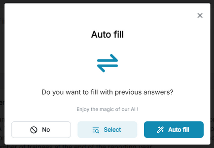
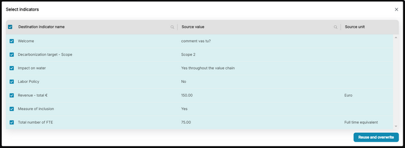

R21P-915: Respondents can now pre-fill a current questionnaire with applicable responses from a previously completed questionnaire.
This can now be done using the new Magic Popup—an intelligent feature designed to streamline the questionnaire process for respondents who have previously completed one with similar questions. This will make the process more efficient and enhance the user-experience by reducing redundant data entry. It will also help ensure response accuracy and consistency across reports.
Respondents can now quickly and accurately pre-fill the current questionnaire using responses from a previous questionnaire, which will reduce the time and effort required to complete applicable questionnaires.
The Magic Popup is automatically triggered and loads quickly when a respondent accesses a questionnaire similar to any questionnaire filled out earlier in a previous report. The Magic Popup provides the following options:
Auto-Fill: The respondent clicks the ‘Auto-Fill’ button to fill out the current questionnaire with responses from a previously completed one.
Different Source: The respondent clicks the ‘Select’ button to choose a different-source questionnaire (from a list of previously submitted ones) with which to populate the current questionnaire.

After the respondent selects an option, the system will display a preview of all the responses that will be imported into the current questionnaire.
Each question in the current questionnaire is listed with its corresponding pre-filled response from the selected source.
The preview will clearly indicate the questions that will become populated and the responses that will be used.

.Respondents can then choose which responses they want to import into the current questionnaire.
Select All: This option will import all suggested responses into the current questionnaire.
Select Individually: This option provides check boxes the respondent can use to select the responses he or she wants.
Once the respondent has made the selections, he or she uses the ‘Reuse & Overwrite’ button to auto-populate questions in the current questionnaire with the confirmed responses. The system ensures that responses are correctly mapped to the corresponding questions in the current questionnaire to prevent any data mismatch or errors.
Note: Only respondents who have previously completed a questionnaire and have permission to view or edit the current questionnaire can use the Magic Popup.